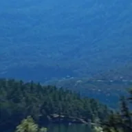

360°-viewer

Toont een 360°-panoramalaag via een virtuele camera die je kunt draaien en zoomen.
Instellingen
| Instelling | Type | Bereik | Standaard |
|---|---|---|---|
| Zwenken | Hoek | -3600° tot 3600° | 0° |
| Kantelen | Hoek | -3600° tot 3600° | 0° |
| Rollen | Hoek | -3600° tot 3600° | 0° |
| Gezichtsveld | Getal | 1 tot 179 | 90 |
| Uitvoer | Keuze | Weergave, Panorama | Weergave |
| Afstand | Getal | 0 tot 10 | 0 |
| Beeldverhouding | Getal | 0 tot 10 | 0 |